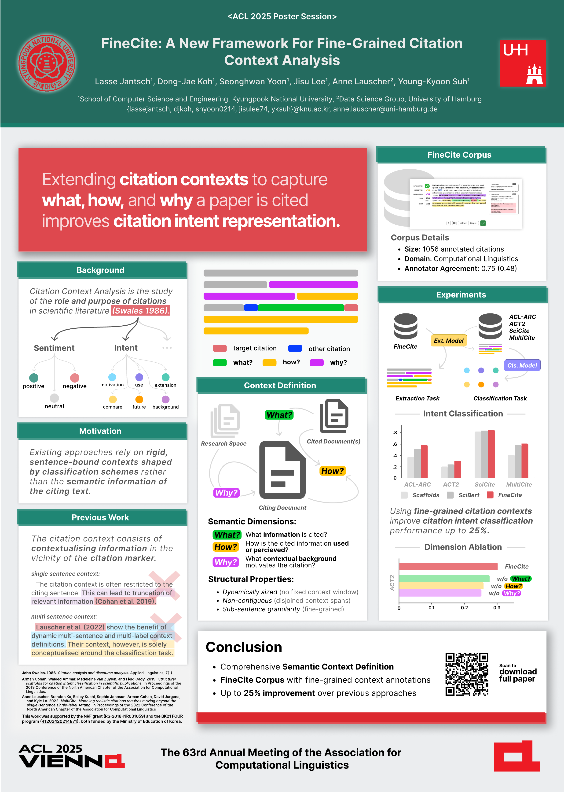

|
Dong-Jae Koh I'm an M.S. student in the Big Data & AI Convergence System (DACS) Lab at Kyungpook National University, advised by Prof. Young-Kyoon Suh. I received my B.S. from the Division of Global SW Convergence, School of Computer Science & Engineering, Kyungpook National University. My research focuses on the mechanistic interpretability of large language models. If you're interested in collaborating or discussing research ideas, please feel free to reach out anytime! |
🔎 Research InterestMy research interests span natural language processing (NLP), with a current focus on understanding the inner workings of large language models. Recently, I have been particularly interested in:
|
📚 Publications
*: denotes equal contribution. †: denotes corresponding author.

|
Dual Path Attribution: Efficient Attribution for
SwiGLU-Transformers through Layer-Wise Target
Propagation
Lasse M. Jantsch*, Dong-Jae Koh*, Seonghyeon Lee†, Young-Kyoon Suh† ICML Mechanistic Interpretability Workshop, 2026 Paper / Code |
|
 |
FineCite: A Novel Approach for Fine-Grained Citation
Context Analysis
Lasse M. Jantsch, Dong-Jae Koh, Seonghwan Yoon, Jisu Lee, Anne Lauscher†, Young-Kyoon Suh† ACL Findings, 2025 Paper / Code |
🏆 Honors and Awards
|
📁 Experience
|